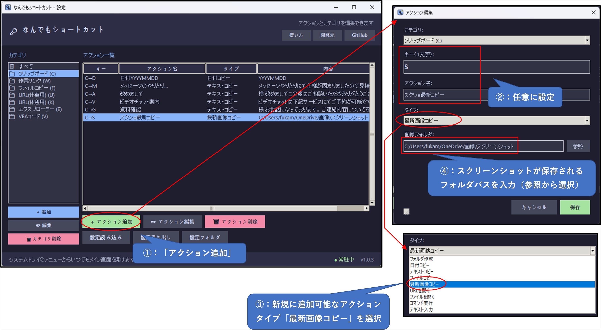
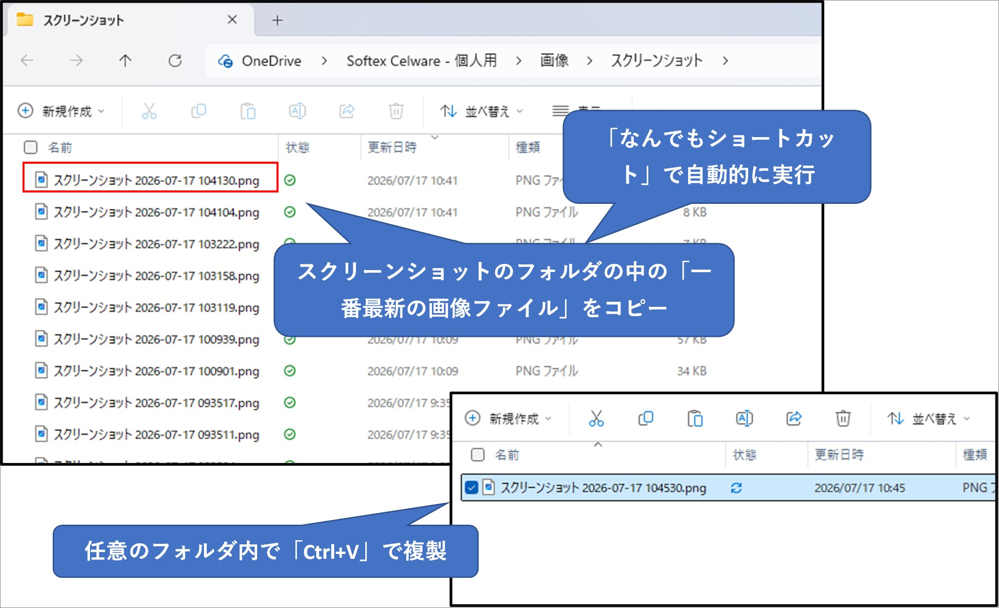

この機能でできること
最新スクリーンショットを選ぶ
スクリーンショット保存先など、指定したフォルダ直下の画像ファイルから最新の1枚を自動で選びます。
ファイルとしてコピーする
画像データではなく画像ファイル自体をクリップボードへコピーするため、エクスプローラーで貼り付けできます。
保存先を自由に変えられる
貼り付け先のフォルダを開いて Ctrl+V を押すだけで、最新画像を複製できます。
設定方法
設定画面でアクションを追加し、タイプに「最新画像コピー」を選びます。キーとアクション名は任意で設定し、画像フォルダにはスクリーンショットが保存されるフォルダを指定してください。
- 設定画面で「アクション追加」を押します。
- キーとアクション名を入力します。
- タイプから「最新画像コピー」を選択します。
- 画像フォルダにスクリーンショット保存先を入力するか、「参照」から選択します。

実行例
ランチャーから設定したキーを実行すると、対象フォルダ内で一番新しい画像ファイルがコピー待機状態になります。その後、貼り付けたいフォルダを開いて Ctrl+V を押すと画像ファイルを複製できます。

補足
- 対象は指定フォルダ直下の画像ファイルです。サブフォルダ内は検索しません。
- 判定にはファイルの更新日時を使います。
- 対応拡張子は
png、jpg、jpeg、bmp、gif、webp、tif、tiff、heicです。